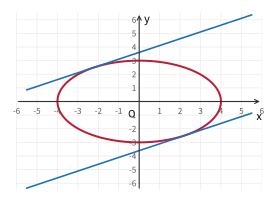
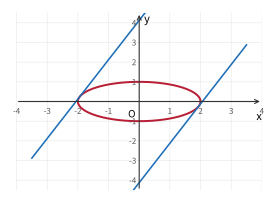
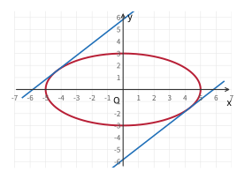

別冊練習問題 6 の解答 傾きが与えられた楕円の接線
(1) 楕円 \(\dfrac{x^2}{16}+\dfrac{y^2}{9}=1\) の接線で、傾きが \(\dfrac{1}{2}\) であるものの方程式を求めよ。
直線を代入
\(y=\dfrac{1}{2}x+k\) を \(\dfrac{x^2}{16}+\dfrac{y^2}{9}=1\) に代入して \(x\) の2次方程式にする。
重解の条件（判別式 = 0）
\[13 X^{2} + 16 X k + 16 k^{2} - 144=0\]
\(D=0\) より：\[k^2=16\cdot\dfrac{1}{4}+9=13\]

接線
\[y=\dfrac{1}{2}x\pm\sqrt{13}\]【答案】
\[y=\dfrac{1}{2}x\pm\sqrt{13}\]答
(2) 楕円 \(\dfrac{x^2}{4}+\dfrac{y^2}{1}=1\) の接線で、傾きが \(2\) であるものの方程式を求めよ。
直線を代入
\(y=2x+k\) を \(\dfrac{x^2}{4}+\dfrac{y^2}{1}=1\) に代入して \(x\) の2次方程式にする。
重解の条件（判別式 = 0）
\[17 X^{2} + 16 X k + 4 k^{2} - 4=0\]
\(D=0\) より：\[k^2=4\cdot4+1=17\]

接線
\[y=2x\pm\sqrt{17}\]【答案】
\[y=2x\pm\sqrt{17}\]答
(3) 楕円 \(\dfrac{x^2}{25}+\dfrac{y^2}{9}=1\) の接線で、傾きが \(1\) であるものの方程式を求めよ。
直線を代入
\(y=x+k\) を \(\dfrac{x^2}{25}+\dfrac{y^2}{9}=1\) に代入して \(x\) の2次方程式にする。
重解の条件（判別式 = 0）
\[34 X^{2} + 50 X k + 25 k^{2} - 225=0\]
\(D=0\) より：\[k^2=25\cdot1+9=34\]

接線
\[y=x\pm\sqrt{34}\]【答案】
\[y=x\pm\sqrt{34}\]答